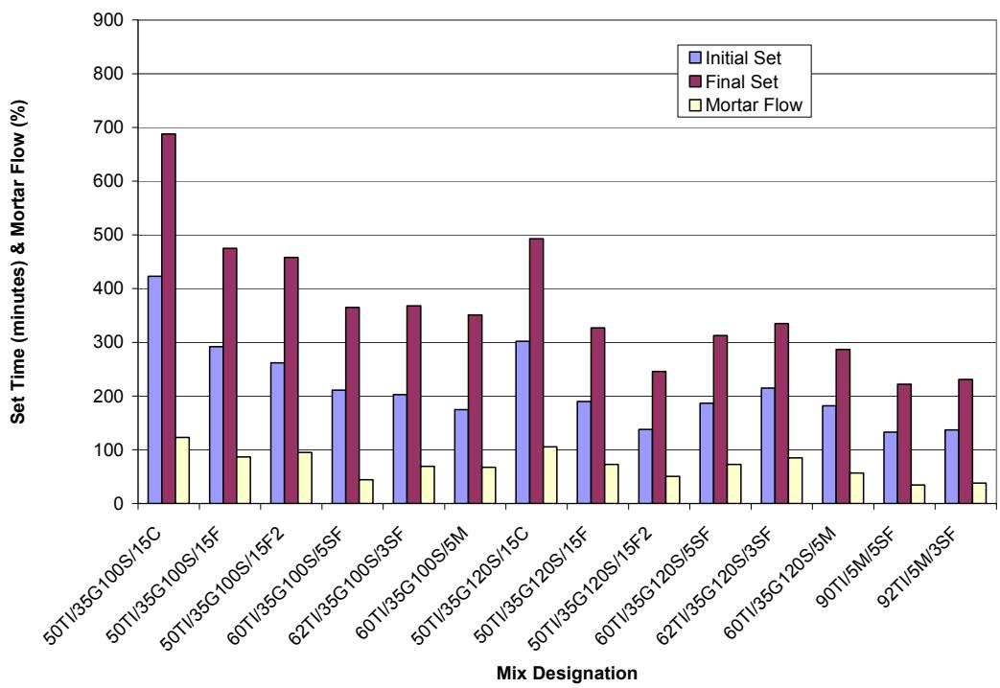
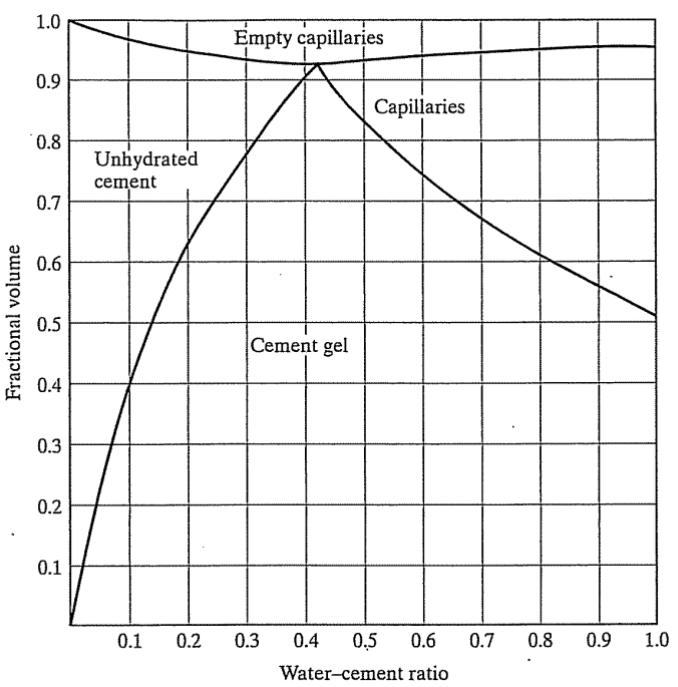
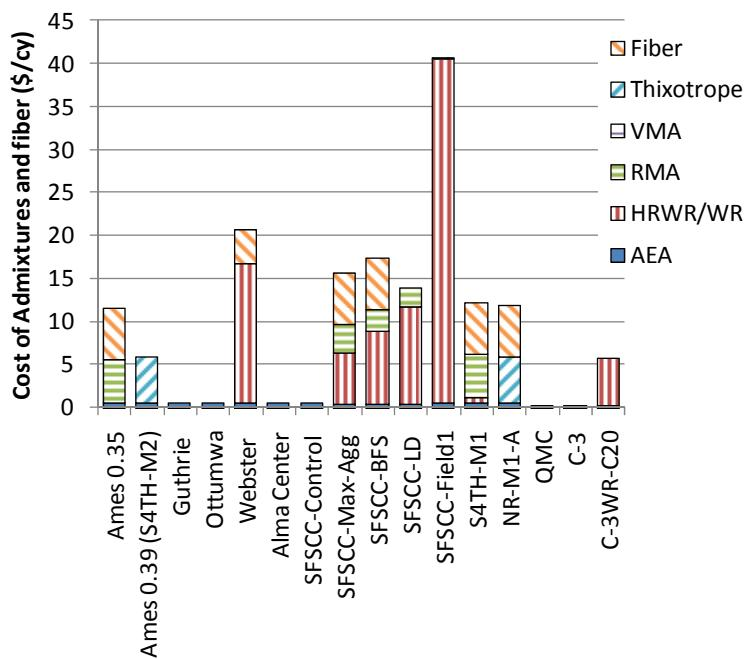
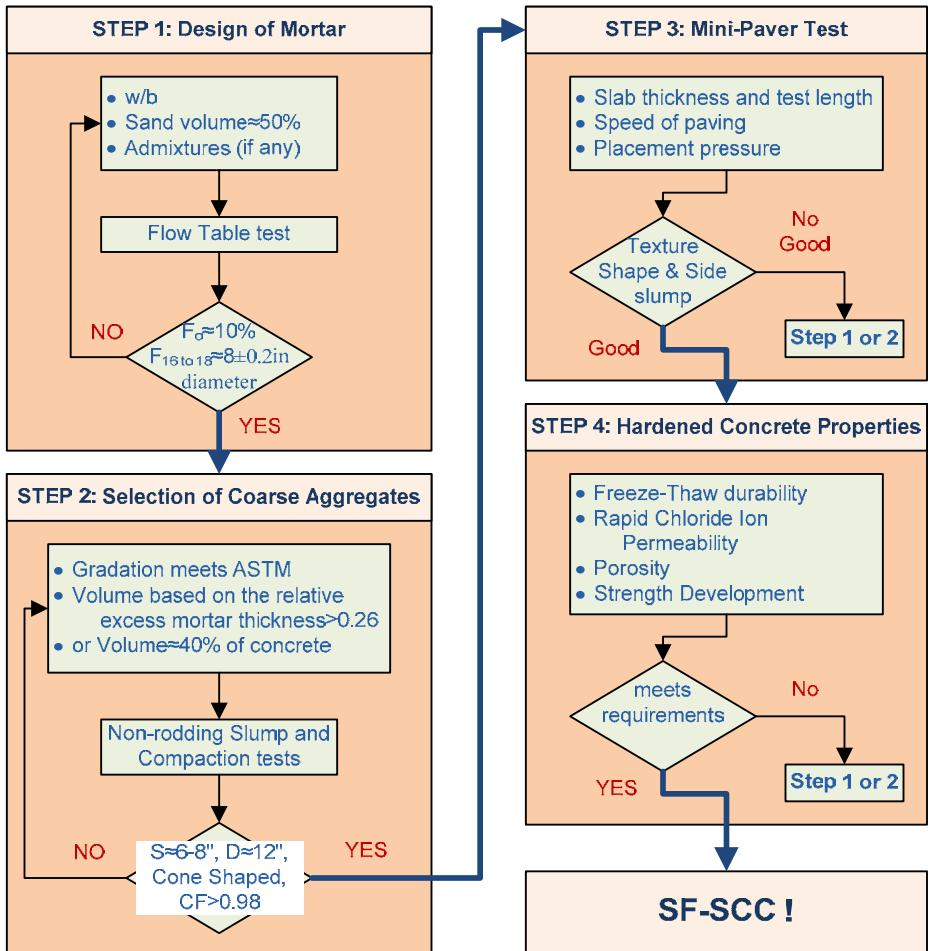

Performance-Based Mix Design
Performance-based mix design is a methodology that selects and proportionates concrete constituents to achieve specified engineering outcomes, such as strength, durability, workability, and surface characteristics, rather than relying solely on traditional prescriptive limits or fixed volumetric ratios. This approach integrates material testing, predictive modeling of fresh and hardened behavior, and optimization tools to link mixture properties directly to predicted pavement performance over its service life [1]. The governing principle is that the properties of the mixture are determined by the interrelationships among paste volume, water-to-cementitious ratio, and aggregate characteristics, ensuring that sufficient binder quality and quantity provide adequate coating and void filling [2]. By tailoring proportions to meet functional criteria such as transport resistance, freeze-thaw resilience, and flowability, the method enables the minimization of material consumption and environmental impact while maintaining structural integrity and constructibility [3] [4].
CP Tech Center reports covering “Performance-Based Mix Design” also include the following subtopics: Critical Minimum Cementitious Content and Vp/Vvoid Ratio.
Performance-Based Mix Design shifts focus from fixed proportions to meeting defined engineering outcomes through several interconnected mechanisms. Critical Minimum Cementitious Content establishes the absolute lower bound of binder required to satisfy specific durability and volumetric performance targets defined by the Superpave system. Vp/Vvoid Ratio serves as the geometric design parameter that determines the minimum binder quantity required to meet specific performance targets by ensuring adequate paste volume relative to aggregate voids.
Sources (9)
Sub-concepts (2)
Key findings
- The study generated a comprehensive dataset quantifying how ternary blends affect shrinkage, sulfate resistance, ASR mitigation, strength development, heat evolution, and sensitivity to water-reducing agents, providing the quantitative basis for performance-based mix design decisions [5].
- Stepwise regression analysis allowed engineers to predict key engineering properties such as area under the curve, time to initial and final set, maximum temperature, and time to maximum temperature, enabling rapid narrowing of candidate mixes before field testing [5].
- The chemistry of the cementitious system dominated early-age heat evolution and setting behavior, while compatibility with water reducers caused significant set-time delays unless high-range polycarboxylate reducers were employed [5].
- Achieving the recommended fine air-void structure often required higher AEA dosages for high-LOI Class F fly ash, and many mixes fell short of the specific-surface range needed for optimal durability [5].
- A simple, repeatable calorimetry procedure served as the core of performance-based mix design by linking heat-evolution characteristics to key field outcomes, including early-age set times and two-day strength predictions [6].
- Heat indexes derived from isothermal or semi-adiabatic calorimetry reliably distinguished different cements, supplementary materials, and curing regimes, while flagging incompatibilities [6].
- Integration of calorimetric data with HIPERPAV translated heat-evolution indices into thermal-cracking risk assessments for mix design validation [6].
- The performance-based mix proportioning procedure for semi-flowable SCC contained three major steps: designing SFSCC mortar mix proportion for specified flowability, determining coarse aggregate content based on required flowability and compactibility, and verifying initial proportions with a mini-paver test [3].
Analytical Tools and Trade-Off Analysis
Evidence: 7 reports (6 primary)
Research problem — Current concrete specifications remain predominantly prescriptive, lacking the quantitative performance-based frameworks necessary to guide engineers in selecting optimal proportions for complex ternary cementitious systems [5] [7] [8]. The absence of reliable predictive models and standardized field tools creates significant uncertainty regarding durability, heat evolution, and early-age performance, forcing reliance on costly trial-and-error methods [5] [9] [6]. Existing analytical approaches often treat supplementary cementitious materials as independent agents, failing to capture the synergistic interactions required for accurate trade-off analysis and sustainable mix design [8].
The following figure illustrates temperature data for ternary mixtures with 35% slag cement.
 Temperature evolution of ternary cementitious mixtures containing slag and varying alkali sources over time. [7]
Temperature evolution of ternary cementitious mixtures containing slag and varying alkali sources over time. [7]
Temperature rise is notably higher in the mixtures containing the high alkali cement compared to those with lower alkali content, indicating that chemical composition significantly influences early-age thermal performance.
State of the art — The field has shifted from prescriptive ingredient limits to a quantitative, target-oriented framework that relies on systematic laboratory calibration and on-site validation of ternary supplementary cementitious material systems against measurable durability criteria [7]. Analytical tools now integrate predictive models with rapid field diagnostics, such as calorimetry and surface resistivity, to evaluate complex trade-offs between early-age strength development, heat of hydration, and long-term durability performance [9] [7]. Current consensus emphasizes optimizing water-to-binder ratios and supplementary cementitious material dosages to balance sustainability goals with constructability requirements, moving specifications toward explicit performance clauses rather than fixed percentage limits [2] [8].
The following figure illustrates the adiabacal calorimetry test equipment used to measure the heat of hydration in this performance-based framework.
 Adiacal calorimetry test equipment for heat of hydration of concrete [7]
Adiacal calorimetry test equipment for heat of hydration of concrete [7]
The image displays a portable Adiacal calorimeter system consisting of an open carrying case containing four cylindrical sample holders and a closed unit labeled “GRACE INSTRUMENTS”. A laptop computer is connected to the apparatus, displaying software with a graph that tracks temperature over time during the test. This equipment performs calorimetry tests in accordance with ASTM C 1679 to measure the heat of hydration generated by concrete mixtures.
Findings from the reports
- Demonstrated that performance-based mix design using ternary supplementary cementitious material blends can reconcile durability, strength, workability, heat evolution, and environmental goals by judiciously selecting specific combinations [5] [8].
- Flagged material incompatibilities through calorimetric testing, such as significant set-time delays when Class C fly ash was combined with certain water reducers unless high-range polycarboxylate admixtures were employed [5] [6].
- Revealed that incorporating ground-granulated blast-furnace slag consistently lowered the peak temperature during hydration and shifted the time to peak heat later, while silica fume raised the overall heat signature [5].
- Showed that stepwise linear regression linked mix chemistry variables to key performance metrics with R² values between 0.651 and 0.756, providing a predictive tool to pre-screen candidate mixes against set response criteria [5].
- Established that concrete properties such as strength and durability do not improve significantly by adding additional cement after a critical paste level is reached, whereas excess binder raises chloride penetrability, air permeability, shrinkage risk, and CO₂ emissions [2].
- Confirmed that achieving adequate workability requires approximately 1.25 to 1.5 times the aggregate void volume in paste, while strength plateaus once the paste volume reaches roughly twice the void volume [2].
- Indicated that reducing the water-to-cementitious ratio using high-range water reducers and supplementary cementitious materials is more efficient for increasing strength and durability than adding more cement [2].
- Validated that resistivity measurements correlate strongly with chloride-penetration results, offering a rapid performance indicator for assessing permeability and chloride resistance in performance-based designs [8].
- Highlighted that higher supplementary cementitious material dosages can increase cracking susceptibility if not balanced with adequate air-void control, emphasizing the need for real-time air-void testing to ensure consistent freeze-thaw resistance [7].
- Indicated that laboratory-derived workability tests are useful for flagging overly wet mixes during the design phase but proved less practical for on-site quality control, suggesting a need for better real-time performance-based test specifications [9].
Novelty & rigor — The field has shifted from prescriptive dosage limits to data-driven frameworks that utilize systematic factorial testing and regression modeling to quantitatively link binder chemistry and paste volume metrics directly to durability, thermal, and workability targets [5] [2]. Novel analytical approaches integrate rapid calorimetry and field-compatible resistivity diagnostics with simulation tools to predict early-age performance and identify ingredient incompatibilities before full-scale deployment [6] [7]. Reproducibility relies on strict adherence to specific material palettes, standardized mixing protocols, and multi-stage validation sequences that span from mortar-level characterization to mini-paver simulations and field demonstrations [5] [2] [3] [9] [7].
The following figure illustrates how these rigorous testing protocols quantify material performance by displaying the relative excess mortar thickness across various experimental trials.
 Relative excess mortar thickness for different trials [3]
Relative excess mortar thickness for different trials [3]
The figure displays a bar chart comparing the relative excess mortar thickness of Self-Compacting Flowable Concrete (SFSCC) mixtures across three distinct experimental phases. Data is presented for three specific locations: Alma Center, Ottumwa, and Guthrie County. The chart illustrates that mixtures utilizing coarse aggregate from Alma Center required a significantly thicker excess mortar layer compared to the other sources. This variation in paste volume is necessary to achieve specific engineering outcomes such as flowability and self-consolidating ability.
Reported values
| Parameter | Value | Context | Source |
|---|---|---|---|
| number of control mixtures | 12 | reduced mixture designs | [5] |
| number of control mixtures | 13 | PC or binary mixtures containing PC and one SCM | [5] |
| number of mixture designs | 120 | reduced due to inability to procure grade 80 GGBFS | [5] |
| paste volume to void volume ratio (Vp/Vvoid) | 125 percent | mixtures containing SCMs for workability | [2] |
| paste volume to void volume ratio (Vp/Vvoid) | 150 percent | plain cement mixtures for workability | [2] |
| paste-to-voids ratio for minimum workability | 1.25 to 1.5 times | minimum workability of concrete | [2] |
| durability factor | close to 85 percent | Mix 1 and 2 | [9] |
| resistivity | 26.8 kohm-cm | cast samples at 56 days | [9] |
| slump | 1.0 to 3.6 in. | M-QMC mixes used in the five sites | [9] |
| final set time | 3.0 hours | mix containing 25% Class C fly ash plus a water reducer | [6] |
| final set time | 8.4 hours | calorimeter method baseline | [6] |
| adjusted charge passed (ASTM C1202) | 1109 C | mixture with permeability class Low | [7] |
| adjusted charge passed (ASTM C1202) | 468 C | mixture with permeability class Very Low | [7] |
| air content | at least 4% | all 28 mixtures | [8] |
| ASR expansion at 14 days | >0.10% | control mixtures with highly reactive aggregate | [8] |
23 more distinct values omitted here; the full span-verified set is in the quantities sidecar.
The following figure illustrates how these performance parameters relate to the set time and mortar flow of specific mixtures containing Type I Portland cement with supplementary cementitious materials.

Set time and mortar flow for mixtures containing Type I PC and 35% GGBFS or Type I PC and 5% metakaolin [5]The figure displays a bar chart comparing the initial set, final set, and mortar flow across various concrete mix designs incorporating supplementary cementitious materials. By presenting data on workability (mortar flow) alongside setting times for different binder combinations, the chart provides experimental evidence used to optimize mixture proportions based on functional criteria rather than prescriptive limits.
Across the reviewed reports, analytical tools for performance-based mix design converge on using quantitative regression models and isothermal calorimetry to predict setting behavior, heat evolution, and strength development with high accuracy, enabling engineers to pre-screen candidate mixes before field testing. These predictive frameworks reveal critical trade-offs where increasing supplementary cementitious material content reduces peak heat and carbon intensity but often delays setting times and requires careful management of air-void structure to maintain durability. Furthermore, the synthesis indicates that while paste volume relative to aggregate voids governs workability and strength plateaus, excess binder beyond critical thresholds increases permeability and shrinkage risk without improving mechanical performance. [5] [2] [6] [7] [8]
The following figure illustrates how these variables influence setting behavior by showing the effect of cement type and temperature on set times.
 Effect of cement type and temperature on set times [6]
Effect of cement type and temperature on set times [6]
The figure displays a three-dimensional bar chart comparing the final set time across different cement types (labeled III, I, and ISM) at four distinct temperatures. For each cement type, the bars representing lower temperatures are taller than those for higher temperatures, indicating that set times increase as temperature decreases. The addition of fly ash increased both initial and final set times regardless of curing temperature, which is consistent with previous research results.
Implications — Designers must transition from prescriptive limits to performance-based specifications that utilize statistical regression models and calorimetry data to screen ternary blends for thermal, strength, and durability trade-offs before field deployment [5] [6]. Optimization efforts should target the minimum paste volume required to exceed workability thresholds, as adding excess binder degrades long-term durability and increases environmental impact without improving structural performance [2]. While laboratory validation tools are effective for mix screening, their broader adoption requires the development of refined field-ready testing protocols to manage variability in material sources and set-time predictions during construction [9] [7].
Limitations — Analytical models for performance-based mix design are currently restricted to specific cementitious chemistries and proportion ranges, limiting their reliability when applied to alternative materials or extrapolated beyond the calibrated data [5]. The predictive accuracy of certain analytical tools is constrained by methodological assumptions, such as unrealistic aggregate geometry models, and by the lack of robust correlations between laboratory durability metrics and actual field performance [2] [9]. Trade-off analyses are complicated by significant variability in early-age strength development with high supplementary cementitious material replacement levels and the absence of standardized, real-time testing capabilities for critical parameters like air-void structure [7] [8].
Methodological Frameworks and Implementation
Evidence: 4 reports (2 primary)
Performance-based mix design shifts the focus from adhering to fixed volumetric ratios or prescriptive ingredient limits toward selecting and proportioning constituents to achieve specific functional outcomes such as durability, strength, and workability [1]. The methodology relies on calibrated predictive models that link mixture properties to long-term service life performance, allowing designers to optimize for cost and sustainability while ensuring compatibility with construction methods [1]. Implementation typically involves a sequential design process where the mortar phase is optimized for rheological properties like yield stress and viscosity before coarse aggregate content is selected to balance flowability with stability, followed by validation through laboratory simulations [3]. The governing principle underlying this framework is that mixture properties are determined by the interrelationships among paste volume, water-to-cementitious ratio, and aggregate characteristics rather than isolated component amounts [2].
The following figure illustrates the composition of sealed and fully hydrated portland cement paste, which serves as a fundamental component in determining these mixture properties.

Composition of sealed and fully hydrated portland cement paste [2]The figure plots the fractional volume of unhydrated cement, cement gel, capillaries, and empty capillaries as a function of the water-cement ratio. It demonstrates that increasing the water-cement ratio leads to an increase in capillary volume, which is a critical factor for permeability and durability.
Research problem — The field lacks a systematic framework capable of simultaneously satisfying competing fresh-state demands for semi-flowable concrete while controlling cementitious content, cost, and durability [3]. Existing design procedures are disconnected from long-term performance requirements because they rely on prescriptive specifications that fail to accurately describe the impact of mixtures on functional criteria such as strength, permeability, and texture [1] [4]. The absence of reliable quality-assurance testing methods prevents engineers from verifying that performance-based mixes meet specified property limits, leading to inconsistent field outcomes and over-reliance on empirical guesswork [1] [4].
The following figure illustrates how this approach influences material economics by comparing the costs of admixtures and fibers in semi-flowable self-consolidating concrete versus conventional pavement concrete.

Comparative cost of admixtures and fiber in SFSCC and conventional pavement concrete [3]The figure displays a stacked bar chart comparing the unit costs of various chemical admixtures and fibers across different semi-flowable self-consolidating concrete (SFSCC) mixtures and conventional control mixes. The data illustrates that while SFSCC formulations require specific high-range water reducers to achieve flowability, the total cost of these admixtures is generally comparable to or lower than those used in conventional concrete.
State of the art — Performance-based mix design has transitioned from legacy volumetric or property-driven recipes toward a fully integrated, model-driven paradigm that links material selection and proportioning directly to structural performance targets using mechanistic-empirical tools like the MEPDG [1]. The field is increasingly institutionalized through nationally coordinated programs such as Performance-Engineered Mixtures, which replace traditional strength-centric specifications with standardized tests for transport, durability, and workability codified in standards like AASHTO R 101 [4]. Current implementation relies on data-driven decision-support environments that correlate laboratory metrics with long-term field performance, while ongoing research focuses on refining rheology through additives and developing real-time diagnostic tools to address material variability and constructability trade-offs [1] [3].
The following figure illustrates how these material adjustments influence key workability and structural properties.
 Effect of mineral and chemical admixtures on flowability and green strength of fresh concrete with small-sized aggregates [3]
Effect of mineral and chemical admixtures on flowability and green strength of fresh concrete with small-sized aggregates [3]
The figure plots Green Strength against Flow Ratio to demonstrate how the addition of clay, fly ash, and viscosity modifying agents shifts the properties of self-consolidating concrete (SCC) away from conventional slip-form concrete (SFC). The source context explains that green strength testing is used to develop mixes that reach maximum consolidation at minimum compaction energy, where flowability decreases and green strength increases. This data supports performance-based mix design by providing the specific rheological metrics required to tailor mixture proportions for functional criteria like flowability and structural integrity rather than relying on prescriptive limits.
Findings from the reports
- Demonstrated that a structured, three-step performance-based proportioning procedure consistently produced self-consolidating concrete mixes that met stringent fresh-state flowability and consolidation targets while achieving hardened-state durability comparable to conventional pavement concrete [3].
- Achieved substantial reductions in cementitious material content (up to 24%) through optimized aggregate usage, slag substitution, and limestone dust addition without compromising key fresh properties such as slump, spread, or air content [3].
- Revealed a trade-off where performance-based mixes exhibited noticeably higher drying shrinkage than conventional concrete, requiring careful management through proper curing and construction practices to prevent cracking [3].
- Showed that while material costs for performance-based mixes were equal to or higher than traditional options, total project costs remained comparable due to efficiencies in construction execution [3].
- Identified a significant gap between early-age fresh-air measurements and actual hardened-state air-void system quality, indicating that current test methods may not reliably predict long-term freeze-thaw durability without extensive validation [4].
- Confirmed that implementing performance-based specifications requires robust coordination between state agencies and industry, as well as dedicated technology transfer and training to ensure consistent application of new test methods [4].
Novelty & rigor — The methodology introduces a systematic, multi-stage workflow that replaces prescriptive recipes with performance-based sequences linking mortar proportioning to field-scale validation simulations [3]. This approach integrates standardized testing protocols and portable instrumentation into a unified framework that directly connects mix properties to pavement service life predictions and risk management [1] [4]. Reproducibility is ensured through the adoption of specific national standards, structured data platforms for cross-project analysis, and detailed computational models that guide proportioning adjustments based on material variability [1] [4].
Reported values
| Parameter | Value | Context | Source |
|---|---|---|---|
| cement content reduction | 24% | use of slag and addition of coarse aggregates | [3] |
| cement decrease | 15% | addition of limestone dust | [3] |
| cement reduction | 15% | addition of limestone dust | [3] |
| cementitious materials decrease | 20.9% | addition of limestone dust | [3] |
| cementitious materials reduction | 20.9% | addition of limestone dust | [3] |
| compaction factor | at least 97.5% | SFSCC mixes | [3] |
| field service duration without shrinkage cracks | approximately 3 years | well-proportioned and well-constructed SFSCC in a bike path | [3] |
| final set time advance | 30 minutes earlier minutes | SFSCC final set relative to control | [3] |
| initial set time delay | 25 minutes later minutes | SFSCC initial set relative to control | [3] |
| Portland cement decrease | 11.5% | optimum use of coarse aggregates in SFSCC mixture | [3] |
| portland cement reduction | 11.5% | optimum use of coarse aggregates in SFSCC mixtures | [3] |
| difference between air content and SAM | 0.1% | between the air content from the Type B air meter and the SAM | [4] |
| percentage of results above acceptance limit | 14% | results above the recommended acceptance limit of 0.30 | [4] |
| SAM number | 0.21 | across all projects | [4] |
| standard deviation of difference | 0.58% | between the air content from the Type B air meter and the SAM | [4] |
2 more distinct values omitted here; the full span-verified set is in the quantities sidecar.
The following figure illustrates the modified slump test results associated with these cement reduction strategies.
 Modified slump test results from cement reduction study showing SFSCC with slag and limestone dust additions. [3]
Modified slump test results from cement reduction study showing SFSCC with slag and limestone dust additions. [3]
The image displays a mound of fresh concrete that has retained its shape after being subjected to a modified slump test, indicating high viscosity and yield stress. This visual evidence supports the rheological properties of SFSCC mixes, where the ability to hold its shape is critical for filling slip forms under minimal consolidation pressure.
Across the reviewed reports, performance-based mix design frameworks converge on structured, sequential proportioning procedures that enable significant cementitious reductions while consistently meeting target fresh-state properties and hardened performance criteria. While laboratory validations confirm these methodologies yield durable concrete comparable to conventional mixes, field implementations reveal persistent challenges in translating early-age test results into reliable durability predictions due to marginal air-void systems and higher drying shrinkage. The transition from laboratory validation to broader implementation is facilitated by close agency-industry coordination and the integration of new quantitative test methods, though successful adoption requires extensive technology transfer and ongoing specification updates to address variability in construction practices. [3] [4]
Implications — Structured performance-based frameworks enable the reliable production of specialized concretes by replacing trial-and-error proportioning with systematic steps that balance fresh-state workability and hardened durability [3]. Implementing these methodologies requires shifting agency specifications from rigid material limits to optimized gradations and early-age performance tests, which supports sustainability goals but demands rigorous technology transfer and standardized testing protocols [4]. Realizing the economic and environmental benefits of reduced binder content depends on offsetting higher material costs through construction efficiencies and ensuring disciplined field practices to maintain long-term durability outcomes [3] [4].
The figure below illustrates the specific step-by-step process for proportioning SFSCC mixes within this framework.

Flowchart of the SFSCC mix proportioning procedure. [3]The figure displays a four-step workflow for designing Self-Forming Self-Consolidating Concrete (SFSCC), beginning with mortar design and aggregate selection, followed by a mini-paver test to simulate slip-form construction, and concluding with an evaluation of hardened concrete properties like freeze-thaw durability.
Limitations — The framework primarily ensures fresh-state constructability while leaving long-term durability, shrinkage control, and strength development to future investigation [3]. Implementation is hindered by the labor-intensive nature of assessment tools and significant data variability arising from operator technique and specimen preparation differences [4]. Current protocols terminate at plant discharge, excluding critical construction-stage practices such as vibration, finishing, and curing from the performance envelope [3] [4].
Related concepts
In this hierarchy
- Parent: Mix Design & Specialty Mixtures
- Child: Critical Minimum Cementitious Content
- Child: Vp/Vvoid Ratio
Related by shared evidence
- Air Entraining Agent — shares 8 reports
- Cement Hydration — shares 8 reports
- CP Tech Center Reports — shares 8 reports
- Fly Ash — shares 8 reports
- Supplementary Cementitious Materials — shares 8 reports
- Cement-Admixture Compatibility — shares 7 reports
- Concrete Materials & Mixtures — shares 7 reports
- Drying Shrinkage — shares 7 reports
Similar topics
- Mix Design & Specialty Mixtures
- Performance-Based Specification for Ternary Mixtures
- Supplementary Cementitious Materials
- Performance-Engineered Mixtures
- Concrete Materials & Mixtures
- Ternary Mixture
- Cement Hydration
- Cement-Admixture Compatibility
References
- D. Harrington, R. Rasmussen, D. Merritt, T. Cackler, and P. Taylor, "Long-Term Plan for Concrete Pavement Research and Technology—The Concrete Pavement Road Map (Second Generation): Volume II, Tracks (FHWA-HRT-11-070)," National Center for Concrete Pavement Technology, Iowa State University, Ames, IA, 2012. [Online]. Available: https://www.fhwa.dot.gov/publications/research/infrastructure/pavements/pccp/11070/11070.pdf
- P. Taylor, F. Bektas, E. Yurdakul, and H. Ceylan, "Optimizing Cementitious Content in Concrete Mixtures for Required Performance," National Concrete Pavement Technology Center, Ames, IA, 2012. [Online]. Available: https://www.intrans.iastate.edu/wp-content/uploads/2018/03/taylor_ocm_w_cvr2.pdf
- K. Wang, S. P. Shah, J. Grove, P. Taylor, P. Wiegand, B. Steffes, G. Lomboy, Z. Quanji, L. Gang, and N. Tregger, "Self-Consolidating Concrete—Applications for Slip-Form Paving: Phase II," National Concrete Pavement Technology Center, Ames, IA, Rep. TPF-5(098), 2011. [Online]. Available: https://www.intrans.iastate.edu/wp-content/uploads/2018/03/SCC_Phase_2_final_report-edited_wcover.pdf
- J. Gross, J. Weiss, T. Ley, P. Taylor, N. Weitzel, T. Van Dam, G. Smith, and C. Jones, "Performance-Engineered Concrete Paving Mixtures," National Concrete Pavement Technology Center, Iowa State University, Ames, IA, Rep. TPF-5(368), 2022. [Online]. Available: https://www.intrans.iastate.edu/wp-content/uploads/2023/04/performance-engineered_concrete_paving_mixtures_w_cvr.pdf
- P. Tikalsky, V. Schaefer, K. Wang, B. Scheetz, T. Rupnow, A. St. Clair, M. Siddiqi, and S. Marquez, "Development of Performance Properties of Ternary Mixes, Phase 1," Center for Transportation Research and Education, Ames, IA, Rep. TPF-5(117), 2007. [Online]. Available: https://www.intrans.iastate.edu/research/completed/development-of-performance-properties-of-ternary-mixes-phase-1/
- K. Wang, Z. Ge, J. Grove, J. M. Ruiz, R. Rasmussen, and T. Ferragut, "Simple and Rapid Test for Monitoring the Heat Evolution of Concrete Mixtures, Phase 2," Center for Transportation Research and Education, Ames, IA, 2007. [Online]. Available: https://www.intrans.iastate.edu/wp-content/uploads/2018/03/calorimeter.pdf
- P. Taylor, P. Tikalsky, K. Wang, G. Fick, and X. Wang, "Development of Performance Properties of Ternary Mixtures: Field Demonstrations and Project Summary," National Concrete Pavement Technology Center, Ames, IA, Rep. TPF-5(117), 2012. [Online]. Available: https://www.intrans.iastate.edu/wp-content/uploads/2018/03/ternary_final_w_cvr.pdf
- P. Tikalsky, P. Taylor, S. Hanson, and P. Ghosh, "Development of Performance Properties of Ternary Mixtures: Laboratory Study on Concrete," National Concrete Pavement Technology Center, Ames, IA, Rep. TPF-5(117), 2011. [Online]. Available: https://www.intrans.iastate.edu/research/completed/development-of-performance-properties-of-ternary-mixtures-laboratory-study-on-concrete/
- X. Wang, P. Taylor, and D. King, "Evaluation of Modified Concrete Mixture Proportions for the City of West Des Moines," National Concrete Pavement Technology Center, Ames, IA, 2016. [Online]. Available: https://www.intrans.iastate.edu/wp-content/uploads/2018/03/WDM_modified_concrete_mixture_proportions_w_cvr.pdf
Feedback on this page